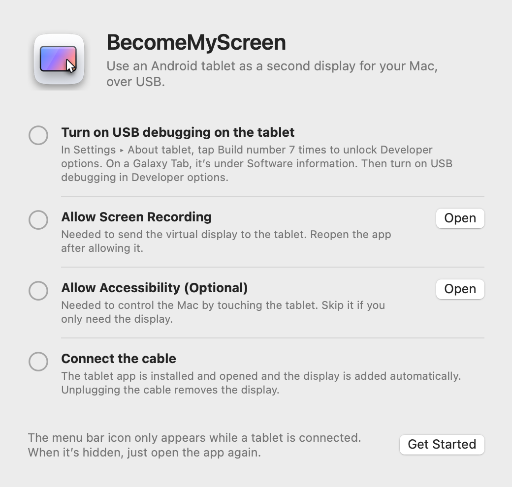
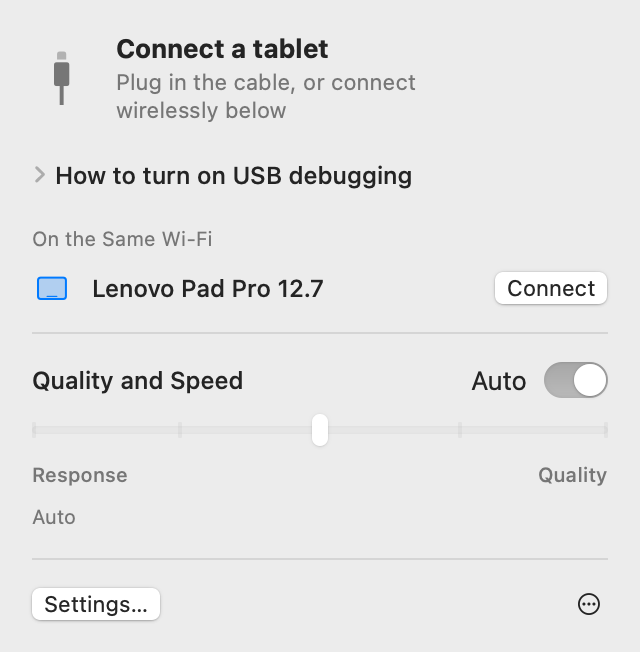
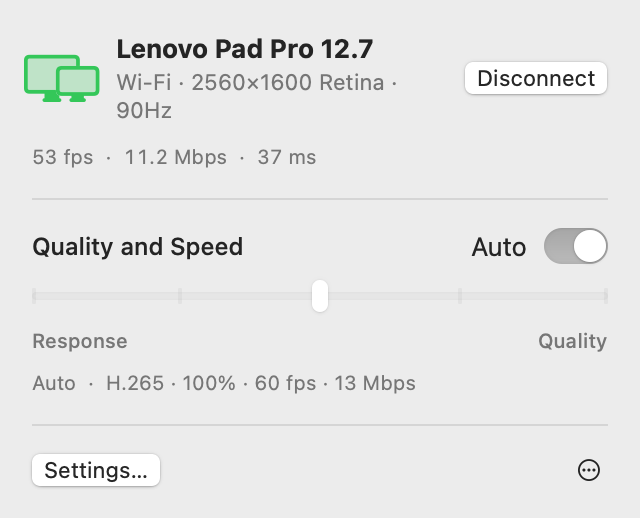
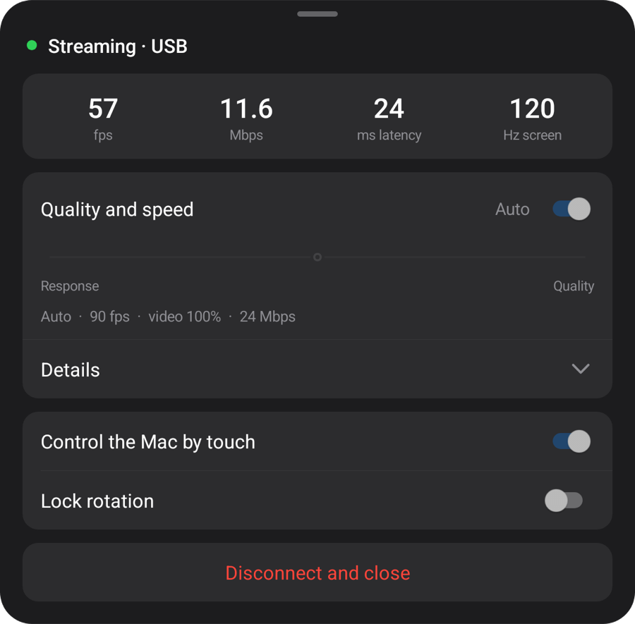
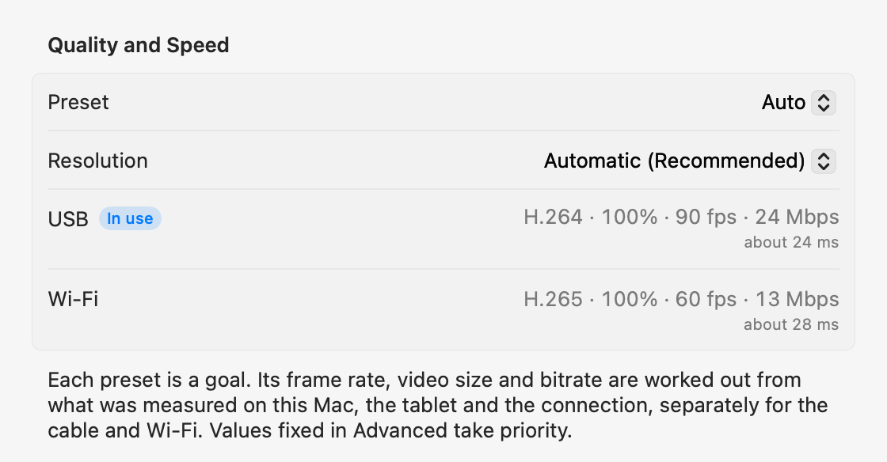

macOS + Windows
Your tablet.
Your computer’s screen.
Use your Android tablet as a second display for Mac or Windows. Connect by USB to install and open the tablet app automatically.
Open the zip, move the app to the Applications folder and open it. For the first connection, see Setup.
Open this page on your computer to download the Mac or Windows app.

1.1.0
Windows
Now on Windows 11. Native apps for Intel/AMD x64 and ARM64, in one download.

Run the installer, connect your tablet by USB and allow USB debugging. The video engine downloads on first launch.
The measurements below were taken on Mac.
Setup
You only set it up once. After that, plugging in the cable adds the display, and on the same Wi‑Fi it connects without a cable.
-
Install the Mac app
Open the downloaded zip, move BecomeMyScreen to the Applications folder and open it. Allow Screen Recording, then open the app once more.
-
Turn on USB debugging on the tablet
In Settings › About tablet, tap Build number seven times to unlock Developer options. On a Galaxy Tab, it’s under Software information. Then turn on USB debugging in Developer options.
-
Connect the cable
When the tablet asks whether to allow USB debugging, check “Always allow from this computer” and tap Allow. The Mac installs and opens the tablet app, then adds the display. There’s no separate tablet app to download.

Speed
The time from the moment the Mac captures the screen until the tablet draws it. Measured with a Lenovo Pad Pro 12.7 and an M4 Pro Mac.
| Video size | 60 fps | 120 fps |
|---|---|---|
| 100%2560×1600 | 20 ms | 24 ms |
| 75%1920×1200 | 14 ms | 19 ms |
| 50%1280×800 | 11 ms | 16 ms |
The hardware encoder in Apple silicon compresses the screen to H.264 and sends it over USB, and the tablet’s hardware decoder draws each frame as it arrives. On the first connection, Auto measures how much the decoder can handle and picks the highest frame rate that doesn’t fall behind. On this tablet it chose 90 fps.
How it was measured: after correcting for the difference between the two devices’ clocks, we measured the time between the Mac capturing a frame and the tablet drawing that frame.
Wireless
A tablet that has been connected once over USB also works wirelessly on the same Wi‑Fi. Unplug the cable while you work and the screen carries on over Wi‑Fi.
- Connecting
- Open the app on the tablet and it appears in the “On the Same Wi‑Fi” list in the Mac menu bar. Click Connect and the screen comes up.
- Unplugging
- It switches to Wi‑Fi within a second. The virtual display and your window layout stay as they are, and plugging back in returns to USB.
- Security
- The key for wireless connections is only ever exchanged over the USB cable. A connection is made only after the key checks out, and the screen and input are all encrypted with AES-256-GCM.
- Adaptive pacing
- The tablet confirms every frame it receives, and the Mac skips as many frames as it has fallen behind and adjusts the bitrate. Even when Wi‑Fi slows down for a moment, delay doesn’t pile up.


| Connection | Latency | Notes |
|---|---|---|
| USB | About 20–25 ms | The tablet’s maximum frame rate |
| Wi‑Fi 5 GHz | 40–55 ms | 60 fps; the bitrate rises automatically up to the quality setting |
| Wi‑Fi 2.4 GHz | 40–65 ms | Latency sometimes spikes past 100 ms, which can look like stutter |
Measured with a Lenovo Pad Pro 12.7 at 2560×1600 with constantly changing content. If the tablet is on 2.4 GHz Wi‑Fi, the app suggests switching to 5 GHz.
Quality and response
Pick one of five steps or leave it on Auto. Change it from the Mac menu bar or from the tablet menu, and both sides change together.
| Preset | Frame rate | Video size | Bitrate |
|---|---|---|---|
| Auto | 90 fps | 100% | 24 Mbps |
| 1Fastest response | 120 fps | 50% | 8 Mbps |
| 2Fast response | 120 fps | 75% | 14 Mbps |
| 3Balanced | 90 fps | 100% | 24 Mbps |
| 4High quality | 90 fps | 100% | 33 Mbps |
| 5Best quality | 60 fps | 100% | 39 Mbps |
Measured with a Lenovo Pad Pro 12.7 (2560×1600, 120 Hz) over USB on an M4 Pro Mac. Each preset is a goal: on another Mac or tablet, and over Wi‑Fi, it works out its own values from what was measured. Auto is the same as Balanced.
Video size is set separately from the resolution the Mac sees. A smaller video still fills the tablet screen, and it lightens the decoder’s load and cuts latency accordingly.
On the first connection, the app measures the cable, this Mac’s video encoder and the tablet’s decoder in each of its modes, in about 10 seconds; the first time over Wi‑Fi, it measures the network. Every preset is fitted to these numbers, separately for the cable and Wi‑Fi, and in Advanced settings you can fix any value for each connection. If the cable is slow, you’re told to replace it.


Touch
Touch the tablet and the Mac receives it as mouse input. It turns on once you allow Accessibility on the Mac.
| On the tablet | On the Mac |
|---|---|
| Tap | Click |
| Drag | Drag |
| Drag with two fingers | Scroll |
| Tap with two fingers | Right-click |
| Tap with three fingers | Opens the tablet menu |
| Draw with a pen | Arrives as graphics tablet input on the Mac, with pressure and tilt |
| Hover a pen or mouse over the screen | Moves the pointer. Touch while holding the pen button to right-click |
A pointer that goes back to where it was
When you touch the tablet, the Mac’s pointer moves to that spot. Move the mouse a little afterwards and the pointer goes back to where it was before the touch, so you don’t have to drag it back to what you were doing on the main display. You can turn this off in Settings.
Details
- Menu bar icon
-
It only shows while a tablet is connected. When it’s hidden, open the app again and it appears for a moment with its panel open.
- Waiting
- Getting ready
- In use
- Needs attention
- Opening the tablet app
- If the tablet app isn’t running when you plug in the cable, the Mac opens it, and wakes the screen if it’s off. It never bypasses the lock screen.
- Updates
- The Mac app checks for new versions and updates itself when you choose. If it brings a newer tablet app, the tablet is updated over the cable before the display starts.
- Portrait
- Turn the tablet to portrait and the virtual display is recreated in portrait too.
- Refresh rate and screen timeout
- While streaming, the tablet’s refresh rate is held so it doesn’t drop to 60 Hz, and the screen doesn’t turn off.
- Cable check
- If USB connects at less than 480 Mbps, transfers stay under 8 MB/s, or the connection drops three times within three minutes, the app suggests trying another cable or port.
- When the connection drops
- If the cable comes out, the screen continues over Wi‑Fi. If it can’t continue wirelessly, the virtual display is kept for a little while, and if the tablet reconnects in that time, your window layout carries on as it was.
- Disconnect and Reconnect
- Click Disconnect in the menu bar and the tablet’s screen is set aside, even with the cable plugged in. Click Reconnect to carry on.
- The tablet app closes itself
- When nothing at all is plugged into the tablet, not even a charger, the tablet app closes itself after 10 seconds. If it can wait for a wireless connection instead, it waits 2 minutes.
Requirements
- Mac
- Mac with Apple silicon, macOS 14 or later
- Windows
- Windows 11 · Intel / AMD x64 · ARM64 · Windows
- Tablet
- Android 8.0 or later, on a device where USB debugging can be turned on
- Cable
- A USB cable that supports data transfer. Charge-only cables won’t connect. A port on the Mac itself is more reliable than a hub.
- Wireless
- The Mac and the tablet need to be on the same Wi‑Fi; 5 GHz is recommended. The first connection has to be over USB.
- Mac permissions
- Screen Recording. Also Accessibility to control the Mac by touch, and Local Network to use it wirelessly.
Frequently asked questions
Windows
If Windows on ARM64 blocks the display driver, use Start-Mirroring.cmd from the ZIP. Release notes and known limits
Do I need to install an app on the tablet?
No. The tablet app comes inside the Mac app, so when you plug in the cable, the Mac installs and opens it. When you update the Mac app, the tablet app is updated along with it on the next connection.
Does it work over Wi‑Fi?
Yes. After you connect once over USB, it connects wirelessly on the same Wi‑Fi from then on. Open the app on the tablet and click Connect in the Mac menu bar, or just unplug the cable while you’re using it. Latency is a little higher than over USB (40–55 ms on 5 GHz), and 2.4 GHz Wi‑Fi can stutter now and then, so 5 GHz is recommended.
Why does the first connection have to be over USB?
Because the key for wireless connections is only exchanged over the cable. That way, no other device on the same Wi‑Fi can pretend to be your tablet and connect to your Mac. The tablet app is installed at that point, too.
Does pen pressure work?
Yes. Pen pressure and tilt reach macOS as graphics tablet input (pressure, tilt and proximity). It uses Android’s standard stylus input, so the S Pen and Lenovo pens need no extra SDK or driver. Tested with the pen for the Lenovo Pad Pro 12.7.
Which tablets does it work with?
Any tablet with Android 8.0 or later where USB debugging can be turned on. Development and measurements were done on a Lenovo Pad Pro 12.7 (2944×1840, 120 Hz); other devices haven’t been tested firsthand yet. The virtual display’s resolution and orientation follow the tablet’s screen when it connects.
Why isn’t it on the App Store?
Creating the virtual display relies on a private macOS feature, so it can’t be published on the App Store. Instead, the app is signed with an Apple developer certificate and notarized by Apple, so it opens right after you download it.
Why does it need Screen Recording and Accessibility?
Screen Recording captures the virtual display to send to the tablet, Accessibility turns the tablet’s touches and pen into Mac input, and Local Network finds tablets on the same Wi‑Fi. The screen only travels over the USB cable or within your Wi‑Fi (encrypted when wireless), and never goes out to the internet.
The connection keeps dropping.
Try another cable that supports data transfer, or plug straight into a port on the Mac instead of a hub. The app tells you first when USB connects slowly or drops often. After a brief drop, the virtual display is kept for 15 seconds and picks up where it left off.
What if the tablet is locked?
The Mac wakes the screen and opens the app, but never bypasses the lock. Unlock it with your PIN or pattern and it connects right away.
Does it work on Intel Macs?
The current release is for Macs with Apple silicon only.
Download
Open this page on your computer to download the Mac or Windows app.
Open the zip, move the app to the Applications folder and open it. For the first connection, see Setup.